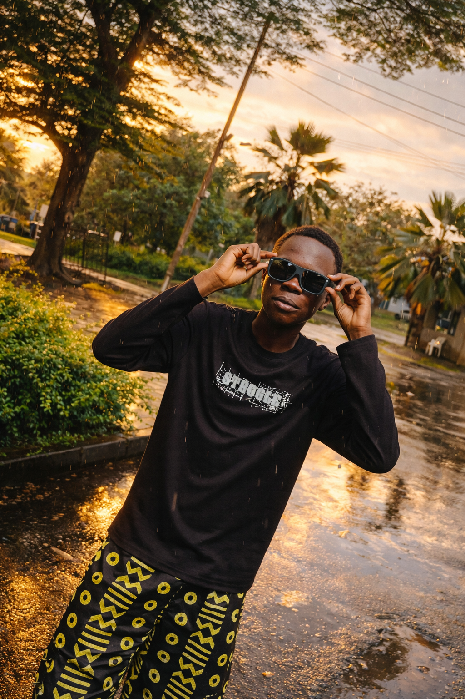
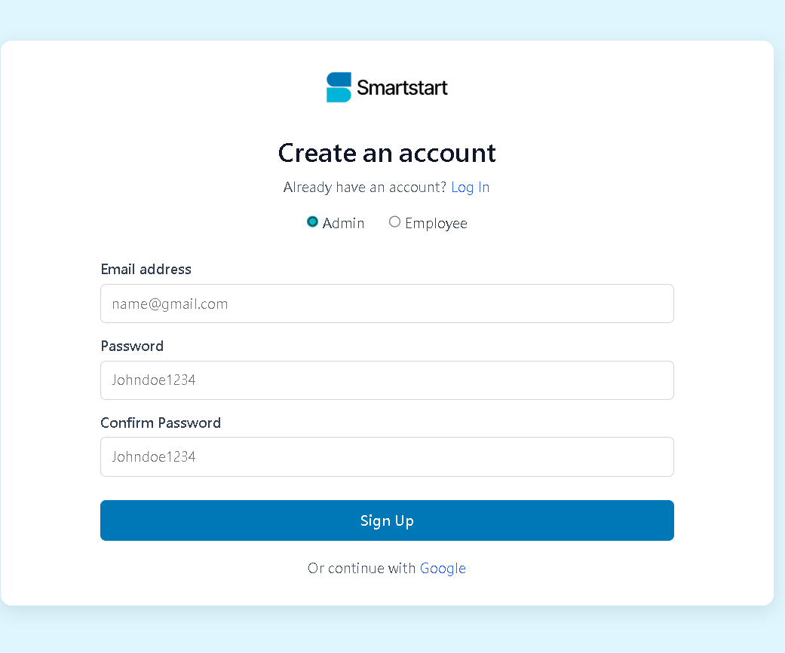
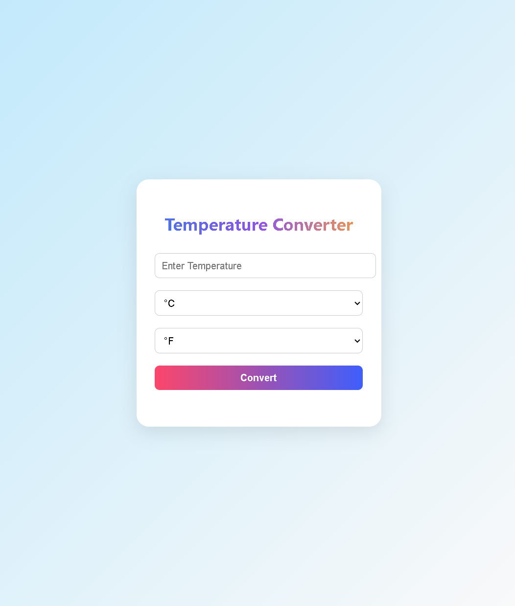
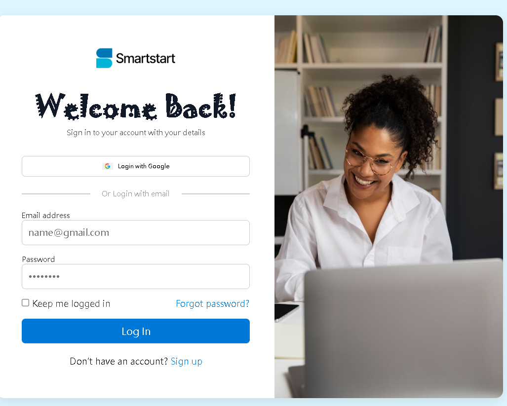

Frontend development
Building responsive interfaces with semantic HTML, modern CSS, and JavaScript.
FRONTEND DEVELOPER · LAGOS, NIGERIA
I'm Ifeoluwa Ajose, a frontend developer who enjoys turning ideas into responsive, accessible websites with clean, maintainable code.
Focused on the details that make a website feel right.

A LITTLE ABOUT ME
I enjoy the space where visual design meets practical engineering.
I work with HTML, CSS, and JavaScript to build websites that feel clear, work across screen sizes, and are easy to use. I care about readable code, accessibility, and the small details that help an interface feel polished.
Outside of coding, I enjoy watching football and exploring new ideas in technology.
Let's connectWHAT I WORK WITH
The tools and creative skills I use to shape web experiences.
Building responsive interfaces with semantic HTML, modern CSS, and JavaScript.
Organizing content, layout, spacing, and visual hierarchy for a clear user experience.
Creating and refining digital visuals to support a consistent look and feel.
SELECTED WORK
A selection of images already featured in my portfolio. Project titles and destination links can be added to each card as they are confirmed.

↗CHURCH WEBSITE
Preview from my existing portfolio.

↗PROJECT PREVIEW 02
Preview from my existing portfolio.

↗PROJECT PREVIEW 03
Preview from my existing portfolio.
 ↗
↗GRAPHICS DESIGNING
Visual work previously included on my site.
 ↗
↗PORTFOLIO PREVIEW
Visual work previously included on my site.
 ↗
↗PORTFOLIO PREVIEW
Visual work previously included on my site.
Before publishing, replace generic labels with each item's real name, a short description, technologies used, and working live-demo or repository links.
HOW I APPROACH A BUILD
Get clear on the goal, content, and people the site is for.
Structure the page and turn the design into responsive code.
Check the details, test different screen sizes, and improve usability.
HAVE A PROJECT OR AN IDEA?
Have a question, want to discuss a project, or just want to connect? Reach out through one of my social links.